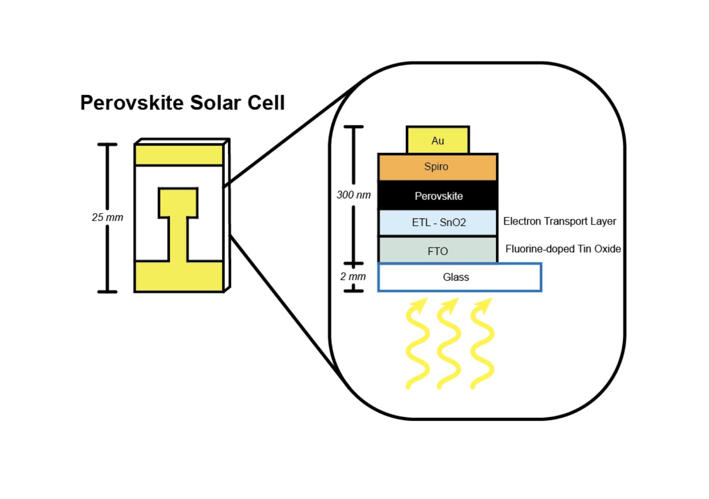
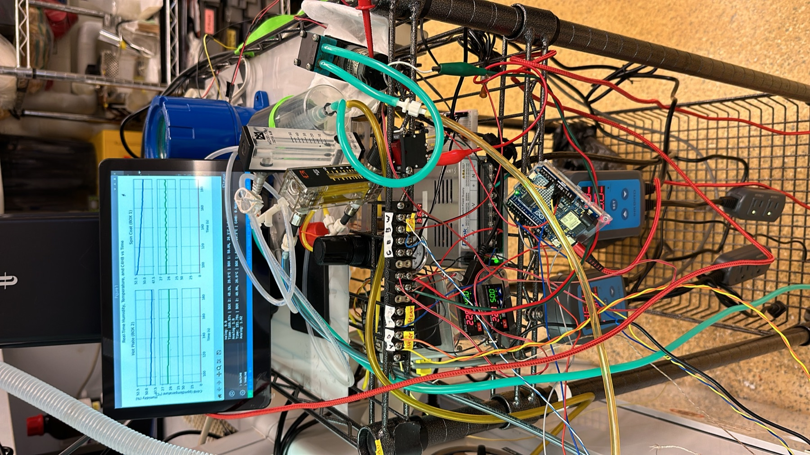
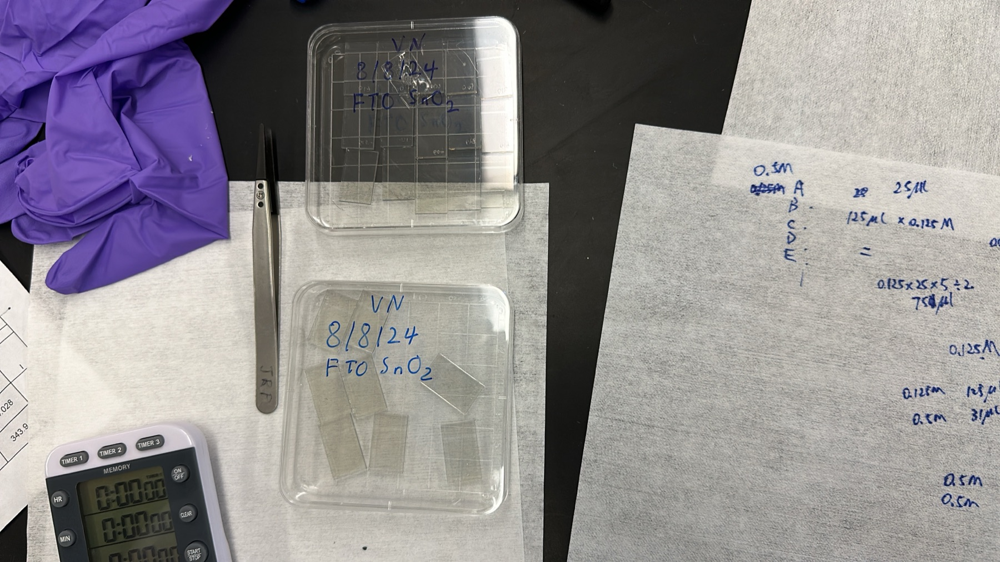
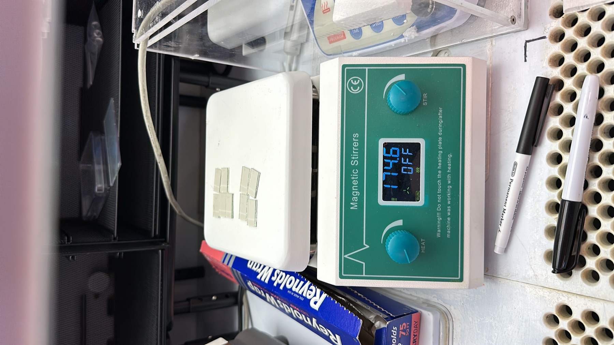
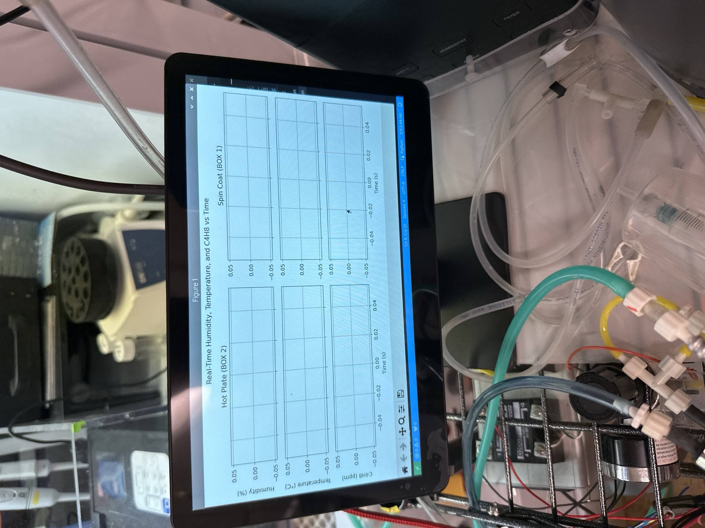
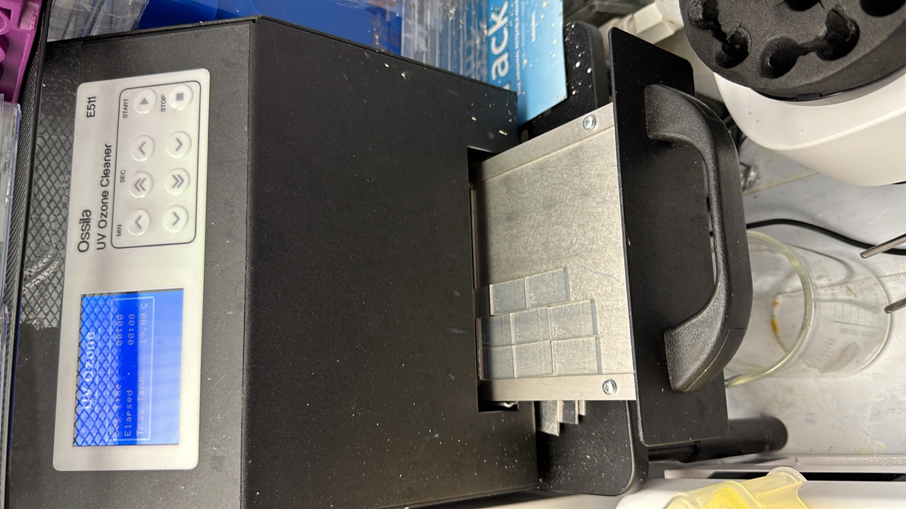
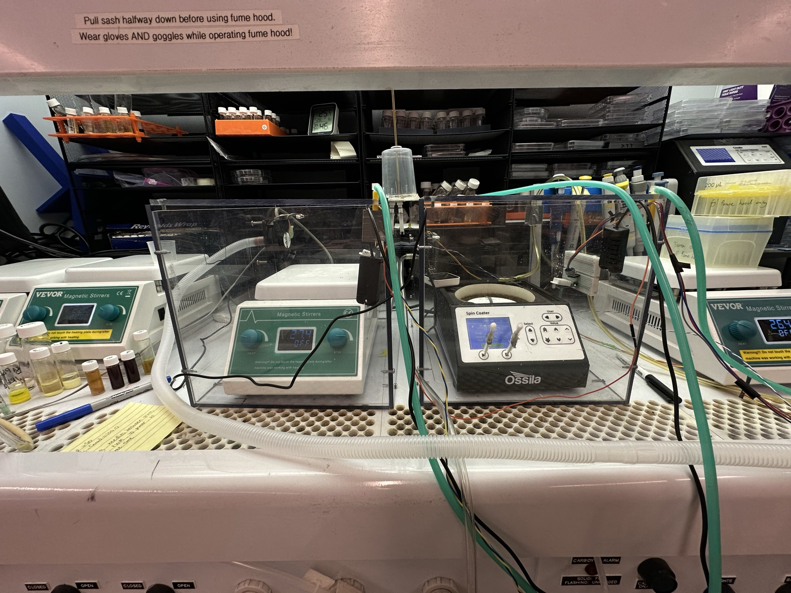
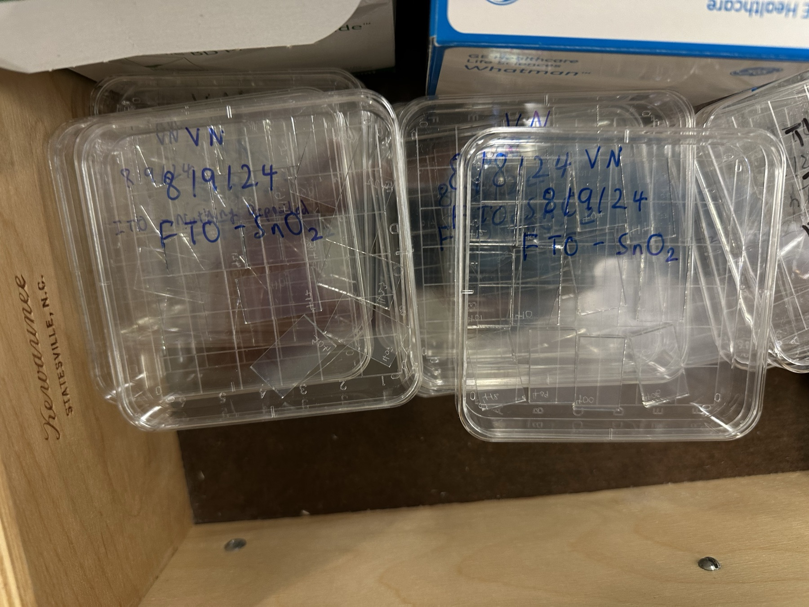

Perovskite Solar Cell Fabrication
June 2024 – January 2025 · Accelerated Materials Laboratory for Sustainability





Summary: Fabricated perovskite solar cells across varying humidity, temperature and solvent vapor conditions, which strongly affect cell performance and stability. I designed the spin-coating protocols, fabricated complete devices, and built a real-time Arduino and Raspberry Pi monitoring system with automated data logging and control to hold fabrication conditions steady. Controlling the environment improved cell stability and gave more consistent, reproducible devices.
Skills
- Thin-film deposition and spin-coating optimization
- Embedded systems: Arduino, Raspberry Pi, automated data logging
- Process control and performance analysis
Technical details
Background. Perovskites are a promising next-generation photovoltaic material, offering high efficiency at low cost, but their sensitivity to conditions during fabrication makes them hard to manufacture consistently at scale. The question was how precisely controlling and monitoring the fabrication environment (humidity, temperature and solvent vapor) could improve cell stability and make production more robust.
Fabrication. I designed and optimized spin-coating deposition protocols for perovskite thin films under controlled environmental conditions, then fabricated complete devices and characterized their efficiency and stability.
Monitoring system. I developed an Arduino and Raspberry Pi system that tracks humidity, temperature and solvent vapor in real time, logs the data automatically, and runs control algorithms that keep conditions in range while the films are deposited.
Characterization. I analyzed how the recorded environmental parameters correlate with solar cell performance.



Materials setup, fabrication steps and completed devices.
Results. Controlling the fabrication environment improved the stability and performance of the solar cells. The monitoring system gave more consistent and reproducible devices and revealed how fabrication conditions relate to device performance, which informs what scalable manufacturing will require. The project built my skills in materials science, thin-film processing and embedded systems.